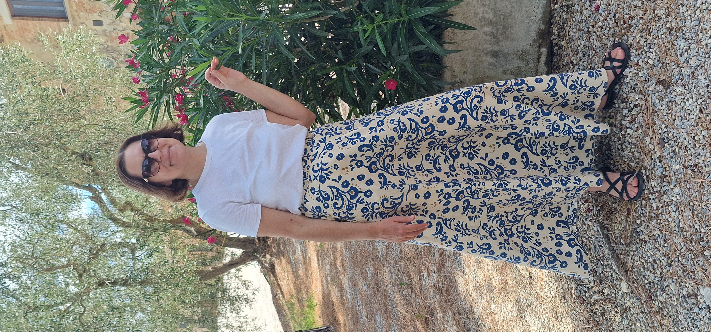

Chi siamo
Scopri chi siamo e la nostra missione con lo YogaKounseling: un percorso che unisce il potere del Kundalini Yoga e l'ascolto profondo del Counseling.
Michela Zanin
Libera professionista Counselor e insegnante di Kundalini Yoga
+39 366 748 1224

Gloria Pacelli
Libera professionista Counselor, insegnante di Kundalini Yoga e Psicologa in formazione.
+39 328 172 7585
La nostra missione
Abbiamo creato l'Associazione Semincammino e dal 2015 aperto diverse sedi. Ci occupiamo di Yoga, meditazione e crescita personale e collaboriamo con enti e aziende.